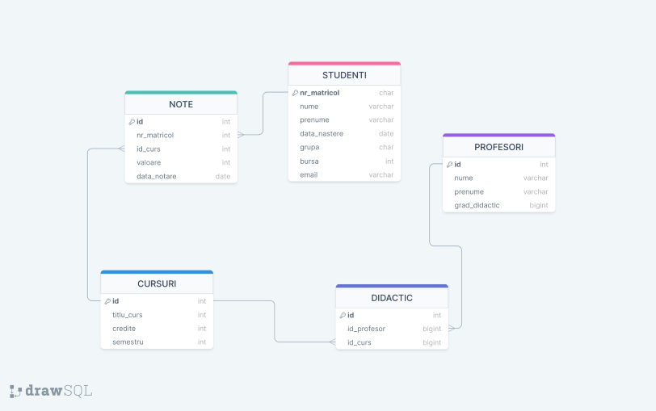

SQL - Tutoring este creată special pentru a te ajuta să navighezi prin complexitățile limbajului SQL într-un mod simplu și eficient. Fie că ești la începutul drumului în învățarea SQL sau îți dorești să îți aprofundezi cunoștințele, această aplicație îți oferă resursele și exercițiile de care ai nevoie.
Cum Funcționează?
Exercițiile noastre acoperă o gamă largă de noțiuni esențiale SQL, inclusiv, dar fără a se limita la:
- JOIN - Învață cum să combini rânduri din două sau mai multe tabele.
- GROUP BY și HAVING - Află cum să grupezi rezultatele și să filtrezi grupuri.
- ORDER BY și ROWNUM - Ordonează-ți interogările și limitează numărul de rânduri returnate.
- WHERE - Specifică condiții pentru filtrarea rândurilor.
- Subinterogări - Utilizează interogări în interiorul altor interogări pentru complexitate sporita
Poți lăsa si comentarii!!!
După rezolvarea corectă a unei probleme, ai acces la comentarii utile lăsate de alți elevi și poți contribui la discuție.
Bonus
După răspunsul corect la 20 de exerciții, contribuie la baza de date de probleme prin formularea unei întrebări proprii.
Baza de Date
La baza tuturor exercițiilor noastre se află o schema a unei baze de date reale, oferindu-ți contextul perfect pentru practică.
